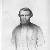

Ласкаво просимо на наш сайт!
На мальовничій рівнині, розташованій біля річки Смотрич і пасма скелястих вапнякових гір, які називаються Товтрами, що майже за 20 км від м. Кам’янця-Подільського, розташоване село Нігин. Воно відоме цікавою історією, оповите
легендами.
Одним із визначних особистостей села є Гординчук Микола Петрович - поет, видавець, журналіст, філателіст, видатний діяч Поділля.
Визначні постатті нашого краю
Гончарук Віктор Олександрович
Український поет, журналіст. Член Національної спілки письменників України.
Дитинство пройшло в селищі Сахкамінь Кам'янець-Подільського району. Закінчив 1969 року Сахкамінську восьмирічну школу

Маврицій Гославський
Польський поет, представник «української школи» в польській літературі.
Дитячі роки провів у селі Нігин (нині Кам'янець-Подільського району). У 1812—1816 роках навчався у повітовій школі в Кам'янці-Подільському